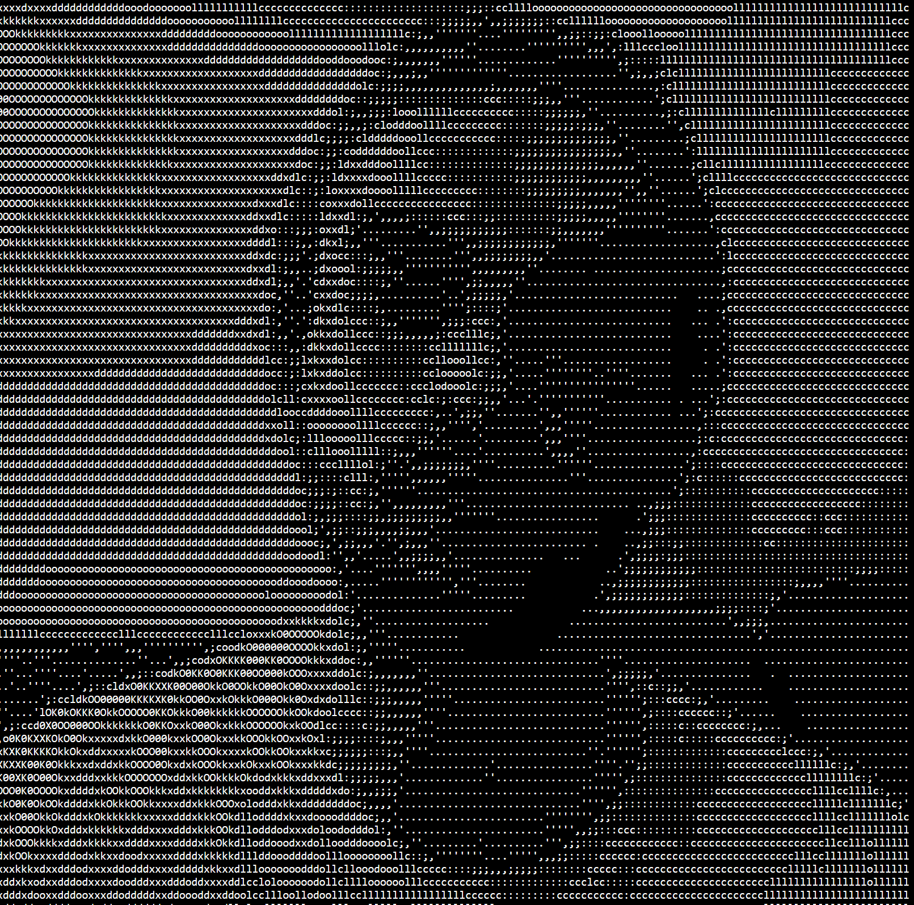

Ryan Samuel Davies is a visual artist, creative technologist and film maker. His work spans theatre, live events, expanded cinema and digital platforms.
With a deep connection to the outdoors and a rich understanding of the cultural and political landscape, Ryans work aims to challenge prevailing norms to augment the world around us.
Ryan is an alumni of the Guildhall School of Music and Drama.
